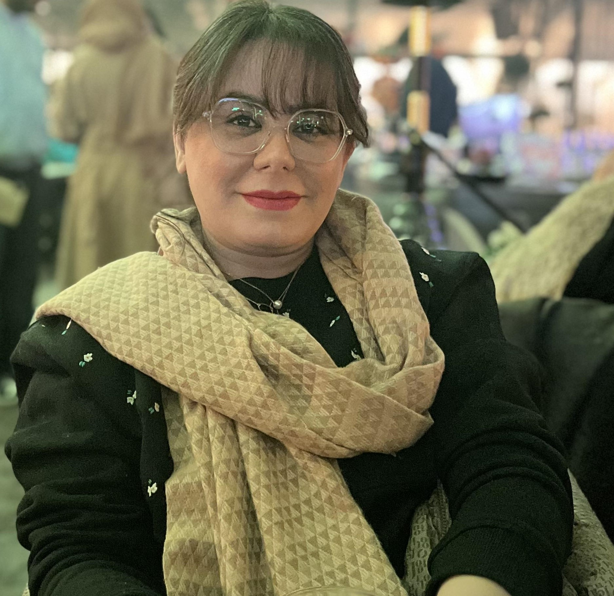

نسترن غلامپور
لیسانس کامپیوتر | تستر نرمافزار
من نسترن غلامپور هستم، یک تستر نرمافزار با پیشینه تحصیلی در رشته کامپیوتر و تجربه کاری در شرکت داتین. در طول مسیر حرفهایام، روی دو اپلیکیشن کاربردی به نامهای پادیما و پادفرم کار کردهام. این تجربهها به من کمک کردند تا مهارتهایم در زمینه تست نرمافزار، شناسایی باگها و ارائه راهحلهای خلاقانه را تقویت کنم.
تخصصها و مهارتها
- تست نرمافزار (Manual Testing)
- کار تیمی و همکاری با تیمهای توسعه
- خلاقیت و حل مسئله
- جستجوگر و کنجکاو
علاقهمندیها
من عاشق یادگیری و مطالعه هستم. کتابها برایم مثل یک گنجینهاند که به من کمک میکنند دیدگاههایم را گسترش دهم و ایدههای جدیدی برای کار و زندگی شخصیام پیدا کنم. همچنین، خلاقیت در کار و زندگی برایم یک اصل است و همیشه به دنبال راهحلهای نوآورانه هستم.